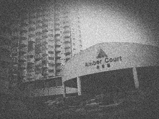

Amber Court Apartments
Genting Highlands, Pahang
Peninsular Malaysia Status: Abandoned Construction halted: 1998 Last known entry: undocumented
Sponsored
Apartment Listings — Genting Highlands
[RECOVERED THREAD] Amber Court Exploration — One Friend Never Came Home
Posted by ExplorerAzman14 Aug 2013, 09:12 PMCategory: Urban Exploration / Missing Persons🔒 THREAD LOCKED
RECOVERY NOTE — This thread was retrieved from a partial backup. 76 of an estimated 76 replies recovered. Some images and timestamps may show artifacts from the recovery process.
ExplorerAzman
Member14 Aug 2013 — 09:12 PM
EX
Posts 41
Original Post
I don't really know how to start this thread except to just write it the way it happened, because every time I try to summarize it for people it comes out sounding smaller than it actually was.
In March 2009, seven of us went up to Genting Highlands for a weekend trip. We weren't just sightseeing — a few of us were into urban exploration and we'd heard about an abandoned apartment block near the old highland road called Amber Court. People online called it haunted, said there were noises, said rooms moved, the usual stuff you'd expect from any abandoned building with a bit of a reputation. We didn't take any of it seriously. We were in our late teens and early twenties and it was just something to film for fun.
There were seven of us: me, Mira, Farid, Nadia, Hafiz, Siti, and Gajee.
We got there around 1pm on a Saturday. The building had been left half-finished and half-abandoned for years — you could see laundry poles still hanging off some balconies, furniture in some units, nothing in others. We went floor by floor. Took a lot of photos. Joked around a lot. Nothing felt wrong for hours.
Around 6pm, getting close to sunset, we were on Level 6. That's when things changed. I'm not going to dramatize it because I want this thread to be useful for anyone with actual information, not just a scary story. But several of us — independently, when the police interviewed us separately — described feeling like we were being watched on that floor specifically. Farid said he heard footsteps behind him in an empty corridor. Nadia said a door at the far end of the hallway opened on its own while we were standing still. Hafiz said someone whispered his name when nobody was near him.
We decided to leave before it got fully dark. When we got down to the ground floor and did a headcount, Gajee wasn't with us.
We assumed he'd lagged behind, which happened a few times that day since he liked to take his time photographing things. We went back up and searched for almost two hours before calling for help. Police did a full search that night and over the following days — every room, the rooftop, the basement levels, the surrounding forest, the security footage from a guard post nearby. Nothing. No backpack, no camera, no footprints, no blood, nothing out of place. It was like he was never there.
His name was Gajee Tambi. He went by Gajee404 online. He was 20. Last seen wearing a black long sleeve shirt and white jeans.
The case stayed open for almost three years. Then in late 2012 it was closed with no explanation given to the family — no suspect, no statement, nothing. We still don't know why.
I'm posting this here because someone mentioned ArchiveNet had old urbex threads and forum archives, and because I want to actually collect what people remember, what they've heard, anything. I have some of the photos from that day. I'll post them as I find them.
— 9 replies — first responses —
mira_klexplore
Member14 Aug 2013 — 09:40 PM
MI
Posts 18
I still think about that hallway on Level 6 more than I think I should, four years later. I haven't wanted to post about it before now.
Thank you for finally writing this down somewhere, Azman.
UrbexMY_Chong
Senior Member14 Aug 2013 — 10:02 PM
UR
Posts 304
I remember Amber Court being talked about in the local urbex community before this happened. After it happened most of us stopped going. Not because of ghost stuff specifically, just because it felt wrong to keep treating it like a fun spot after someone went missing there.
Did the police ever release the floor plans or the search grid publicly? I always wondered if there were areas they didn't actually cover.
ExplorerAzman
Member14 Aug 2013 — 10:15 PM
EX
Posts 42
UrbexMY_Chong wrote:
Did the police ever release the floor plans or the search grid publicly?
Not publicly, no. We saw some of it because the family pushed to be kept informed for a while. Levels 1 through 9 were searched, plus the rooftop and the underground parking that was never finished. The forest behind the building was searched for two more days after that.
There was talk that the search log for Level 6 specifically was incomplete, but I never saw documentation of that myself, just heard it secondhand.
SkepticZul
Member14 Aug 2013 — 11:03 PM
SK
Posts 512
I'm sorry this happened to your friend, genuinely. But I want to say early in this thread — abandoned buildings are dangerous in extremely mundane ways. Open shafts, weak floors, unstable balconies. A fall into a service duct or collapsed stairwell could absolutely explain a disappearance with no blood or footprints, especially in a building that large and that neglected.
I'm not trying to dismiss what you all felt on Level 6. Fear does strange things to memory in a group. I just think it's worth keeping the mundane explanation on the table.
hafiz_kaki
Member15 Aug 2013 — 12:21 AM
HA
Posts 9
I was the one who heard my name whispered. I've never said this publicly before but I'll say it now: it didn't sound like any of our voices. It sounded like it came from inside the wall next to me, not from a person standing in the corridor.
I know how that sounds. I don't care anymore.
ConspiracyRamli
Member15 Aug 2013 — 01:09 AM
CO
Posts 877
Case closed with NO explanation after THREE YEARS open is not normal procedure. I've followed missing person cases in Malaysia for years and that does not happen without someone higher up making a call. Either there was a finding they didn't want public, or there was pressure from somewhere to make it go away.
Has the family tried filing a Freedom of Information-equivalent request? I know our laws are weaker on that but it's worth trying.
mod_aiman
Moderator15 Aug 2013 — 08:44 AM
MD
Posts 0
Reminder to everyone in this thread: this concerns a real missing person and a grieving family. Speculation is fine within reason but please keep it respectful. Thread will stay open as long as it stays civil.
troll_haha123
New Member15 Aug 2013 — 09:55 AM
TR
Posts 3
lol bro probably just ran off with someone's girlfriend and is hiding in JB. genting ghost stories are for tourists
nadia_urbex
Member15 Aug 2013 — 10:40 AM
NA
Posts 22
Please don't.
Some of us were there. Some of us have to live with not knowing. Keep your jokes out of this thread.
— 2 days pass — 17 Aug 2013 —
ExplorerAzman
Member17 Aug 2013 — 02:30 PM
EX
Posts 43
Photos
Found the old memory card. Quality isn't great after this many years but here's the first one — this was right after we arrived, before we'd even gone inside.
[IMAGE — core/genting1.jpeg — Group arriving at Amber Court]
IMG_2009_03_14_001 — Group arriving at Amber Court, early afternoon.
siti_genting
Member17 Aug 2013 — 03:02 PM
SI
Posts 11
I remember taking that one. We were all in such a normal mood that day. It's strange to look at it now knowing what was a few hours away.
FormerResident_Lim
Member17 Aug 2013 — 04:18 PM
FO
Posts 64
My family actually lived in Amber Court briefly when I was a kid, before it was fully abandoned, around the mid-90s. The building was already half-empty then because of construction disputes. I remember Level 6 specifically because my mother refused to let me play near the stairwell on that floor. She never explained why, she just always found a reason to keep me away from it.
I haven't thought about that place in years. Reading this thread is bringing back things I'd forgotten.
GentingLocalAhKow
Member17 Aug 2013 — 05:50 PM
GE
Posts 130
Saya membesar dekat kawasan Genting, dah lama duduk sini. Amber Court ada reputasi yang lebih lama dari cerita-cerita hantu yang orang baca kat internet sekarang. Orang lama kat sini tak suka cakap pasal tingkat tertentu, mereka cuma pesan jangan masuk lepas waktu tertentu. Saya ingat sebab keselamatan, lantai reput, orang pendatang haram. Lepas insiden ni, saya tak pasti lagi.
I've lived near Genting my whole life. Amber Court has a reputation that goes back further than most of the ghost-story crowd online realizes. Older folks around here don't really talk about specific floors, they just say don't go in after a certain hour. I always assumed it was about safety, broken floors and squatters. After this, I'm less sure.
— more replies —
HotelWorker_Yasmin
Member18 Aug 2013 — 09:14 AM
HO
Posts 47
I worked at one of the hotels near there for six years. We had a standing rule among night staff: if a guest asked about Amber Court, you gave them the tourism-board answer and changed the subject. Management never explained it to new hires, you just learned it was the rule.
After what happened to your friend a couple of guests asked us directly if we knew anything. We were told to say we didn't.
ExplorerAzman
Member18 Aug 2013 — 09:50 AM
EX
Posts 44
HotelWorker_Yasmin wrote:
We were told to say we didn't.
Told by who? Was this a company policy or something specific to that location?
HotelWorker_Yasmin
Member18 Aug 2013 — 10:30 AM
HO
Posts 48
Specific to that property. I don't want to say more than that on a public forum. I can say it predates your friend's case by a long time.
[ ACCOUNT DELETED — 2 posts by this user removed from thread ]
ParanormalNurul
Member19 Aug 2013 — 12:05 AM
PA
Posts 220
I do paranormal investigation work, mostly in old colonial buildings and abandoned residential blocks. I've never been inside Amber Court but the pattern you're describing — group disorientation, a sense of being watched concentrated on one specific floor, auditory phenomena including a whispered name — is extremely consistent with sites that have what we'd call a 'tethering' incident, somewhere a presence anchors to a location rather than roaming it.
I'm not saying this to scare anyone further. I'm saying it because if your friend is connected to that floor in some way, that's actually meaningful information.
webdev_amirul
Member19 Aug 2013 — 08:40 AM
WE
Posts 390
Genuine question for the paranormal investigators in this thread — what would falsify your theory? Because right now every detail, mundane or strange, seems to get absorbed into the 'tethering' framework. A door swinging from wind pressure differences in a half-open building becomes a door 'opening on its own.' I'm not trying to be hostile, I just think this thread would benefit from being more careful about what actually counts as evidence.
ParanormalNurul
Member19 Aug 2013 — 09:12 AM
PA
Posts 221
Fair pushback. If there's no further activity reported on that floor by visitors in the next several years, that would weigh against my read of it. I'll leave it there.
— about 1 week passes — 26 Aug 2013 —
backpacker_johan
New Member26 Aug 2013 — 11:48 PM
BA
Posts 4
Found this thread after searching the building's name. Me and a friend went into Amber Court in 2011, didn't know about the disappearance until after. We went up to the 6th floor because someone online said you could see the whole valley from there.
We heard what sounded like children laughing from somewhere down the hall. There were no kids in the building. We left immediately and never went back.
night_shift_guard_rosli
Member27 Aug 2013 — 02:15 AM
NI
Posts 58
I used to do private security patrols on the access road below Amber Court, 2010 to 2012. More than once on night shift I'd see a light on the 6th floor moving slowly past the windows, like someone walking with a torch. Building had no power connected. I reported it twice. Was told it was probably squatters and to not go check personally. I never went to check personally.
ConspiracyRamli
Member27 Aug 2013 — 09:00 AM
CO
Posts 879
Lights with no power source. Security told not to investigate. This is exactly the pattern I'm talking about. Someone made a decision a long time ago that nobody goes up there and asks questions.
SkepticZul
Member27 Aug 2013 — 10:20 AM
SK
Posts 514
Or squatters had a battery lamp and a security guard didn't want to deal with confronting them alone at night, which is an extremely reasonable thing for an underpaid guard to avoid. I get that this thread wants a unifying explanation but I think we're stacking unrelated mundane things into one narrative.
anonymous_genting_worker
New Member28 Aug 2013 — 01:32 AM
AN
Posts 1
posting once and probably won't again. i worked maintenance nearby for years. there's an apartment unit on level 6, 6-404, that doesn't appear on any of the building's official unit listings. i've seen it. it exists. when i mentioned it to my supervisor years ago he told me i was looking at the wrong floor and never to bring it up again. i wasn't looking at the wrong floor.
[ POST REMOVED BY MODERATOR — reason: unverifiable claim flagged for review ]
ExplorerAzman
Member28 Aug 2013 — 09:10 AM
EX
Posts 45
6-404. I want to be careful here because I don't want to chase something that isn't real, but Gajee's username was Gajee404. I don't know what to do with that information except write it down.
mira_klexplore
Member28 Aug 2013 — 09:44 AM
MI
Posts 19
I noticed that too and didn't want to be the one to say it first.
— several days pass —
ExplorerAzman
Member02 Sep 2013 — 06:55 PM
EX
Posts 46
Photos
Second photo. This is the last one taken before we got to Level 6. After this, nobody was really filming anymore, we were just walking.

[IMAGE — core/genting2.jpeg — Last photograph before Level 6]
IMG_2009_03_14_047 — Last photograph taken before reaching Level 6.
hafiz_kaki
Member02 Sep 2013 — 07:20 PM
HA
Posts 10
I keep looking at this one. The hallway behind us looks longer in this photo than I remember it being in person. Might just be the lens.
UrbexMY_Chong
Senior Member02 Sep 2013 — 08:01 PM
UR
Posts 306
Cheap digital cameras from that era had bad wide-angle distortion at the edges, that would explain the stretching. Not trying to debunk everything in this thread, just that specific detail has a normal explanation.
TouristDave_UK
New Member03 Sep 2013 — 03:14 AM
TO
Posts 2
Stumbled onto this from a Genting travel forum. Sorry for your loss. I stayed near there in 2010 and our guide flatly refused to drive past that road after dark, made up some excuse about traffic. Didn't think much of it until I read this.
PoliceWatcherTan
Member03 Sep 2013 — 10:48 AM
PO
Posts 95
I have a contact who used to work adjacent to the unit handling missing persons cases in that district, not directly involved but aware of internal chatter. According to them, the case file was reassigned out of the normal chain at some point — moved to a different office entirely, which isn't standard for a case like this. They didn't know why and didn't want to ask.
mod_zarina
Moderator03 Sep 2013 — 11:30 AM
MZ
Posts 0
PoliceWatcherTan — please don't post unverifiable claims about specific government departments as fact. You can share what you've heard but frame it as hearsay, not as confirmed information. Edited your post accordingly.
— 2 weeks pass — 18 Sep 2013 —
ScaredWitness_intan
New Member18 Sep 2013 — 12:09 AM
SC
Posts 1
I don't usually post on forums like this. In 2012 I went up with my cousin because he didn't believe the stories. We took the elevator — yes it still partially worked off a generator some explorers had hooked up, badly kept secret in the community. The elevator stopped on floor 6 even though we'd pressed for the rooftop and neither of us touched the floor 6 button.
We didn't get out. We just waited and it eventually continued upward on its own and we left as soon as we could.
ghost_hunter_kev
Member18 Sep 2013 — 01:45 AM
GH
Posts 412
Elevators stopping at a specific floor with no input is one of the most commonly reported phenomena in cases like this, across completely unrelated locations worldwide. I'm not saying that makes it true, I'm saying it's a consistent enough pattern across unrelated witnesses that I don't think it's all confabulation.
hafiz_kaki
Member19 Sep 2013 — 09:02 AM
HA
Posts 11
I went back once. Just once, about a year after. I didn't go up past floor 3. I took one photo of an empty hallway from the stairwell on floor 3 and when I got the photos developed there was an extra person standing at the far end of the hallway in the shot. Nobody else was in the building with me that day. I never went back again and I destroyed the photo, which I regret now because nobody believes me without it.
Local_Hamidah
Member19 Sep 2013 — 06:40 PM
LO
Posts 28
Saya sudah tua dan tak selalu main forum, cucu saya tunjukkan thread ni kat saya. Saya nak cakap satu benda saja: kat kawasan kami, orang-orang tua selalu cakap ada tempat yang 'sudah ada penghuni' — maksudnya jangan bawa orang lagi pergi sana, tak payah tambah. Amber Court tingkat 6 memang selalu disebut begitu oleh generasi arwah suami saya, lama sebelum kejadian ni, lama sebelum bangunan tu ditinggalkan pun.
I am older and I don't go on forums often, my grandson showed me this thread. I want to say only this: in our area, older people have always said there are places that are 'sudah ada penghuni' — already occupied — meaning don't bring more people there, it doesn't need more. Amber Court level 6 was always spoken of that way by my late husband's generation, long before this incident, long before it was even abandoned.
[ POST REMOVED — ACCOUNT NO LONGER EXISTS ]
returning_user_faiz
Member20 Sep 2013 — 02:18 AM
RE
Posts 6
Went up there in 2008, a year before this happened, with a group of five. We all heard footsteps that exactly matched our own pace, like an echo that was a half-second too perfectly timed to be an actual echo. We laughed about it at the time. Reading this thread now I don't find it funny anymore.
SkepticZul
Member20 Sep 2013 — 08:55 AM
SK
Posts 516
I want to acknowledge that the volume of independent witnesses describing similar specific details — footsteps matching pace, a presence on floor 6 specifically, the elevator stopping there — is higher than I expected when I first posted in this thread. I still don't think it proves anything supernatural. But I'll admit it's more consistent than I assumed it would be.
— about 10 days pass —
ExplorerAzman
Member30 Sep 2013 — 11:02 PM
EX
Posts 47
Photos
Third photo. Corridor outside one of the abandoned apartments on Level 6. I think this might be near 6-404 but I genuinely can't be sure of the unit numbering anymore looking at it.
Azman this is the hallway. This is exactly the hallway from right before he went quiet. I didn't want to say anything earlier but I recognized it the moment you posted it.
nadia_urbex
Member01 Oct 2013 — 09:40 AM
NA
Posts 23
I can't look at this one for long. Sorry. I believe you that it's the same hallway.
deleted_user_4471
Member01 Oct 2013 — 11:15 PM
??
Posts 0
[ This account has been deleted. Original post content unavailable. ]
[ ARCHIVE CORRUPTED — partial post recovery — 1 line salvaged: "...same person years apart, I saw him too..." ]
SecurityGuardZakaria
Member02 Oct 2013 — 02:40 AM
SE
Posts 71
Saya bekerja security swasta kat hartanah berdekatan hampir sepuluh tahun. Beberapa kali, dalam tempoh tahun yang berlainan, tetamu atau pencerobah lain cerita nampak susuk yang sama, pakaian yang sama, kat tingkat tu — baju lengan panjang gelap, seluar jeans putih, berdiri tak bergerak. Saya tak pernah kaitkan dengan kes orang hilang sampai penerangan kawan kamu sama betul-betul. Saya bukan orang yang mudah percaya benda mistik. Saya cuma sampaikan apa yang dilaporkan kepada saya, lebih dari sekali, tahun yang berlainan, oleh orang yang tak pernah berbual sesama sendiri.
I worked private security on a nearby property for almost a decade. Multiple times over the years, separated by years, different guests or trespassers described seeing the exact same figure in the exact same clothing on that floor — dark long sleeves, white jeans, standing still. I never connected it to a missing person case until your friend's description matched it exactly. I am not a superstitious man. I am telling you what was reported to me, more than once, years apart, by people who never spoke to each other.
ExplorerAzman
Member02 Oct 2013 — 09:18 AM
EX
Posts 48
SecurityGuardZakaria wrote:
dark long sleeves, white jeans, standing still
That is exactly what Gajee was wearing the day he disappeared. I don't know what to say to that. I don't know what I want it to mean.
— the thread keeps growing —
ParanormalNurul
Member02 Oct 2013 — 11:50 AM
PA
Posts 224
Multiple independent sightings of the same described figure, in the same clothing, across separated years, on the same specific floor, is one of the more credible patterns I've encountered reading a thread like this. I'd want to know if anyone has approached him directly in any of these sightings.
SecurityGuardZakaria
Member02 Oct 2013 — 12:30 PM
SE
Posts 72
One of my own men tried, years ago. Called out, walked toward him. Said the figure didn't move at all, not even to turn his head, until my man got close — and then he says the figure was simply gone. Not ran. Gone. He put in for a transfer the next week and never discussed it again.
— weeks pass — late October 2013 —
ConspiracyRamli
Member26 Oct 2013 — 12:00 AM
CO
Posts 884
I've reached out to two journalists about this thread. One responded saying they'd look into FOI options for the case file reassignment angle. I'll update if anything comes of it.
mod_aiman
Moderator27 Oct 2013 — 08:00 AM
MD
Posts 1
Appreciate the effort but please don't share journalist contact details or personal information in this thread. Keep updates general.
troll_haha123
New Member28 Oct 2013 — 02:10 AM
TR
Posts 5
this whole thread is fake the photos are stock images lmao
hafiz_kaki
Member28 Oct 2013 — 09:00 AM
HA
Posts 12
They're not. I took two of them. I have the rest of the roll if anyone needs to see metadata, though I doubt that'll satisfy you and I'm tired of trying to satisfy people like you.
Last one I have. This is a photograph that was released to a local newspaper by the police during the investigation, not one of ours originally, but the paper folded years ago and I managed to find a scan of the clipping. It's described as an evidence photograph from the search.
Evidence photograph released to local press during the search operation, March 2009.
mira_klexplore
Member19 Nov 2013 — 12:05 AM
MI
Posts 21
I've never seen this one before. Where in the building is this supposed to be?
ExplorerAzman
Member19 Nov 2013 — 12:40 AM
EX
Posts 50
The caption in the original clipping just says 'interior, site of search operation.' No floor given. I don't know why that wasn't specified for an official photo.
ParanormalNurul
Member19 Nov 2013 — 10:15 AM
PA
Posts 226
Something about this image is bothering me and I want to be precise about why rather than just say it's creepy. The shadow at the edge of frame doesn't correspond to anything visible in the photo that would cast it. That alone doesn't mean anything on its own, old scans and bad lighting do strange things. I just wanted to note it.
webdev_amirul
Member19 Nov 2013 — 11:50 AM
WE
Posts 392
Compression artifacts and scan noise on an old newspaper clipping will absolutely produce shapes that look like shadows that 'don't correspond to anything.' I'd be cautious reading too much into a low-res scan of a low-res print of a photo from a flatbed camera in 2009.
— about a month passes —
nadia_urbex
Member21 Dec 2013 — 03:14 AM
NA
Posts 24
Can't sleep. Keep thinking about the hallway photo. I called Siti tonight and she said she's been having the same dream for two weeks — walking down that corridor and the door at the end is already open and she knows she's not supposed to go through it but in the dream she always does.
siti_genting
Member21 Dec 2013 — 03:30 AM
SI
Posts 12
I didn't want to post about the dream myself but since Nadia already did. It's the same every time. I open the door and there's nothing in the room except him standing in the corner, facing away from me, and right before I wake up he starts to turn his head.
I never see his face turn all the way. I always wake up first.
ParanormalNurul
Member21 Dec 2013 — 09:40 AM
PA
Posts 228
Shared recurring dreams across multiple people connected to the same incident, with consistent specific imagery, is not something I take lightly. I would gently suggest you two talk to someone, a counselor, not instead of posting here but in addition to it. Trauma can manifest exactly like this regardless of whether anything else is also going on.
[ POST FLAGGED — moderator review pending — content unavailable ]
anon_witness_2014
New Member09 Jan 2014 — 01:02 AM
AN
Posts 1
found this thread late. i was part of a small group that went up there new year's eve 2013 on a dare. one of us swore he heard someone say a single word clearly behind him in the level 6 corridor. the word was "wait." we left immediately and nobody in the group has gone back.
ExplorerAzman
Member09 Jan 2014 — 09:30 AM
EX
Posts 51
Wait. That's what Hafiz said he heard whispered in 2009, except he heard his own name, not the word wait. I don't know if these are the same thing or different things. I genuinely don't know anymore.
— weeks pass — February 2014 —
UrbexMY_Chong
Senior Member14 Feb 2014 — 06:00 PM
UR
Posts 311
I'll admit something. After following this thread for months I went back to Amber Court myself, alone, which I know was a stupid decision and I'm not recommending it to anyone. I only went up to floor 4. I didn't see or hear anything unusual. I'm posting this mainly to say that not every visit produces an incident, in case that's reassuring to anyone, though I recognize it might not be.
SkepticZul
Member14 Feb 2014 — 07:20 PM
SK
Posts 519
Genuinely glad you're okay. Please don't go back again, regardless of what conclusions any of us draw from this thread.
— a few months pass — Summer 2014 —
ExplorerAzman
Member30 Jun 2014 — 11:58 PM
EX
Posts 52
Update
It's been over a year since I started this thread and I don't have anything new to report, which feels worse somehow than if I had bad news. I check this thread most nights. I think some of us are starting to feel like we're maintaining it more than actually investigating anything anymore.
Thank you to everyone who has shared what they remember or what they've heard. It matters more than you probably think it does.
mira_klexplore
Member01 Jul 2014 — 12:20 AM
MI
Posts 22
Still here. Still reading every reply.
hafiz_kaki
Member01 Jul 2014 — 01:05 AM
HA
Posts 13
Still here too.
[ 4 replies unrecovered — archive integrity error — posts could not be restored ]
— the thread goes quiet for a long time —
ExplorerAzman
Member11 Mar 2016 — 02:00 AM
EX
Posts 53
Update
It's been almost two years since the last reply. I don't know why I'm checking this thread tonight, I just woke up and felt like I should.
Mira called me last week. She said she saw someone on the street near her apartment in KL wearing a black long-sleeve top and white jeans, standing completely still, watching her building. When she looked again he was gone. She said it wasn't him. She also said she's not sure how she knows that.
mira_klexplore
Member11 Mar 2016 — 02:40 AM
MI
Posts 23
It wasn't him. I don't know how I know that either. I just know it.
[ TIMESTAMP ERROR — this post's logged server time does not match its display time — discrepancy: 4 hours ]
UrbexMY_Chong
Senior Member12 Mar 2016 — 11:00 AM
UR
Posts 318
Sorry to hear that Mira. For what it's worth, stress and grief anniversaries can produce very vivid pattern-matching, especially with something as specific as the clothing description everyone in this thread already has memorized. I say that as someone who still believes a lot of what's been shared here, not to dismiss it.
— a long silence — over a year —
[ ARCHIVE NOTE — this thread was scheduled for cold-storage migration in 2017. Migration log shows incomplete transfer. Some content below may not match original posting order. ]
ghost_hunter_kev
Member04 Sep 2017 — 03:13 AM
GH
Posts 415
I don't usually revisit threads this old but something pulled me back to this one tonight and I don't have a better explanation than that.
I want to put something on record. I have cross-referenced sightings of a figure matching this description — black long sleeves, white jeans, standing motionless — across four separate abandoned or semi-abandoned buildings in the Genting/Bentong corridor since 2012, reported by people who never saw this thread and never heard of Gajee Tambi. I am not saying this to be sensational. I am saying it because the geographic spread bothers me more than a single haunted floor would.
ConspiracyRamli
Member04 Sep 2017 — 09:40 AM
CO
Posts 901
This is the most unsettling reply in this entire thread for me and I've read all of it twice over the years.
[ POST REMOVED BY MODERATOR — flagged content — moderator note: "this needs to come down, I don't want to explain why" — note itself later removed ]
returning_user_faiz
Member05 Sep 2017 — 12:00 AM
RE
Posts 7
Read the whole thread again tonight start to finish. Something about post #1 reads differently than I remember it reading the first time. I don't think the wording is the same. I don't have the original saved anywhere to compare so maybe I'm wrong.
ExplorerAzman
Member05 Sep 2017 — 09:15 AM
EX
Posts 54
I went back and reread my own first post too after seeing this. It reads the same to me. I think.
I'm not going to pretend that's reassuring, because typing it out I'm less sure than I want to be.
— the thread goes quiet again —
[ NOTICE — Thread flagged LOCKED by administration. Date of action: unresolved. Reason: unresolved. ]
searching_for_gajee
Member??? ??? ???? — ??:?? ??
??
Posts 1
I am Gajee's older sister. I am posting this in every forum thread I can find that mentions him, even old ones, even ones that look dead. If anyone has heard from him, in any way, in any form, please contact me. I don't care how strange it sounds. I just want to know.
hana_revisit_2019
Member??? ??? ???? — ??:?? ??
??
Posts 1
I read this entire thread tonight start to finish, years after it happened, because someone shared a link to it in a private group. I don't know any of you. I just want to say that the figure described here — the clothing, the stillness, the floor — matches something my own father described from a building hundreds of kilometers from Genting, decades before any of this happened. I don't know what that means. I don't think anyone does.
__user_unresolved__
Member00 ??? 0000 — 00:00 ??
??
Posts 0
He is not lost. He has just chosen to join them.
Some of you will read this line and it will already be gone by the time you try to point at it.
[ ARCHIVE INTEGRITY WARNING — the post above does not appear in any server backup. Its existence cannot be confirmed by administration. Multiple users have reported seeing it. Multiple users have reported never seeing it. ]
Gajee404
??? ??? ???? — ??:?? ??
—
—
I'm not lost.
I've just chosen to join them.
ARCHIVENET RECOVERY LOG — THREAD: AMBERCOURT_AUG2013
Recovery date: [unresolved]
Thread status: Open / Active
Original poster account: ACTIVE — Last login: [unresolved]
Special account "Gajee404": flagged — no registration record found
Moderator note: thread contents do not fully match prior recovery snapshots
This record is retained as-is. No further action has been taken.